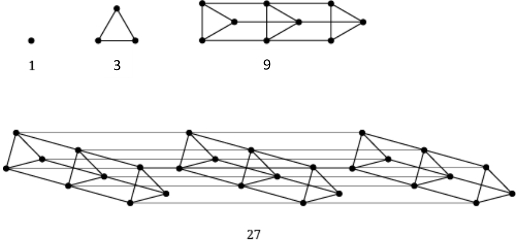
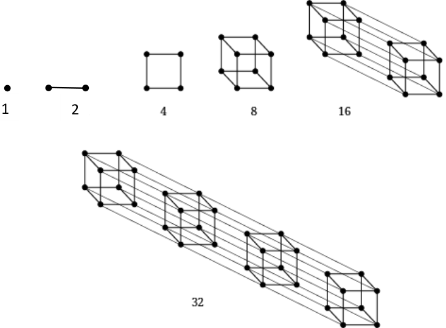
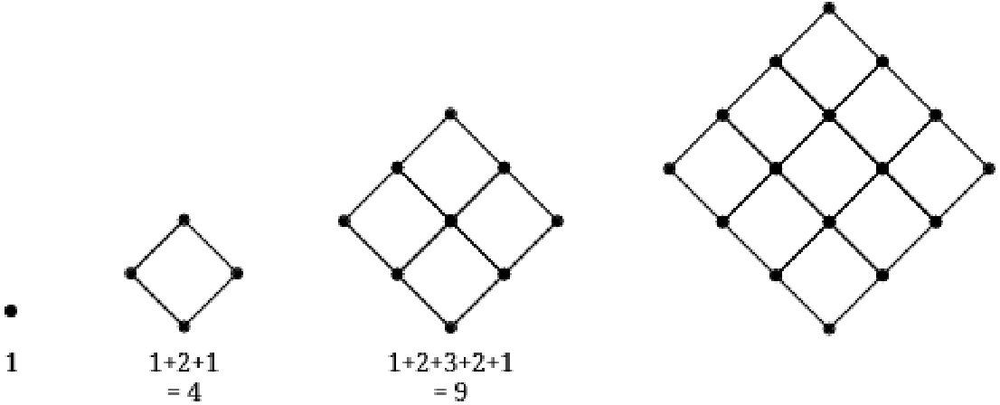

Patterns in Mathematics
Page No. 2.
Section 1.1
Figure it Out
Q1. Can you think of other examples where mathematics helps us in our everyday lives?
Ans. Some examples are paying for fruits, vegetables, groceries etc. calculation of speed of vehicles, designs or patterns in different buildings, finding area of any plot or out own home. There could be many more such contexts in our everyday lives. Discuss for other examples also.
Q2. How has mathematics helped propel humanity forward? (You might think of examples involving: carrying out scientific experiments; running our economy and democracy; building bridges, houses or other complex structures; making TVs, mobile phones, computers, bicycles, trains, cars, planes, calendars, clocks, etc.)
Ans. Teacher student discussion is required.
Page No. 3. Section 1.2
Figure it Out
Q.1. Can you recognize the pattern in each of the sequences in Table 1?
Ans. Yes, There is a pattern in each case.
Powers of \(2- 1,2,4 = 2 x 2\), \(8 = 2 x 2 x2 ,16 = 2 x 2 x2 x 2 x\) 2… Powers of \(3 - 1\), 3, \(9 = 3 x 3 = 27 =3 x 3\) x3,…
Virahanka numbers- 1,2, 3, \(5 = 2 + 3\), \(8 = 3 + 5\), \(13 = 5 +\) 8,….
Rest of the patterns have been shown on page 4 ,Table 2
Page no. 5 Section 1.3 Figure it out
Q.2. Why are 1, 3, 6, 10, 15, … called triangular numbers? Why are 1, 4, 9, 16, 25, … called square numbers or squares? Why are 1, 8, 27, 64, 125, … called cubes?
Ans. Refer Table 2, page 4, and check for yourself.
Q.3. You will have noticed that 36 is both a triangular number and a square number!
That is, 36 dots can be arranged perfectly both in a triangle and in a square. Make pictures in your notebook illustrating this!
Ans. Refer Table 2, page 4, and draw.
Q.4. What would you call the following sequence of numbers?
Ans. 61.
Q.5. Can you think of pictorial ways to visualise the sequence of powers of 2? powers of
3?
Ans. Sequence of powers of \(2 -\) given on page 6
Sequence of powers of 3- One of the ways could be -


Page No. 7
Section 1.4
By drawing a similar picture, can you say what is the sum of the first 10 odd numbers?
Ans. 100
Now by imagining a similar picture, or by drawing it partially, as needed, can you say what is the sum of the first 100 odd numbers?
Ans.10000
Figure it out
Q.1. Can you find a similar pictorial explanation for why adding counting numbers up
and down, i.e., 1, \(1 + 2 + 1\), \(1 + 2 + 3 + 2 + 1\), …, gives square numbers?
Ans. One of the ways is-

1, \(1 + 2 + 1\), \(1 + 2 + 3 + 2 + 1\), …,
Q.2. By imagining a large version of your picture, or drawing it partially, as needed, can
you see what will be the value of \(1 + 2 + 3 +\) ... \(+ 99 + 100 + 99 +\) ... \(+ 3 + 2 + 1\)?
Ans. 10,000
Q.3. Which sequence do you get when you start to add the All 1’s sequence up? What
sequence do you get when you add the All 1’s sequence up and down?
Ans.
- \(1 + (1 +1) + (1 +1 +1) + (1 + 1+1+1)\) …
- 1, \(1+(1+1) + 1\), \(1+(1+1) +(1+1+1) + (1+1) +1\), \(1+(1+1) +(1+1+1) + (1+1+1+1) +\)
\((1+1+1) + (1+1) +1\), ……….
Q.4. Which sequence do you get when you start to add the Counting numbers up? Can
you give a smaller pictorial explanation?
Ans. 1, 1+2, 1+2+3, 1+2+3+4, ………
Which is triangular number sequence. For pictorial representation refer Table 2 on page 4
(Try it for isosceles right triangle also.)
Q.5. What happens when you add up pairs of consecutive triangular numbers? That is,
take \(1 + 3\), \(3 + 6\), \(6 + 10\), \(10 + 15\), … ? Which sequence do you get? Why? Can you explain it with a picture?
Ans. We get: 4, 9, 16, 25, ……… (Square numbers).
For the pictorial representation refer Table 2 on page 4
Q.6. What happens when you start to add up powers of 2 starting with 1, i.e., take 1, \(1 +\)
2, \(1 + 2 + 4\), \(1 + 2 + 4 + 8\), …? Now add 1 to each of these numbers - what numbers do you get? Why does this happen?
Ans.
- We get, 1, 3, 7, 15, 31, …………
- After adding 1 to each number, we get:2, 4, 8, 16, 32, ……
Refer the picture on page 6.
Q.7. What happens when you multiply the triangular numbers by 6 and add 1? Which
sequence do you get? Can you explain it with a picture?
Ans. \((1 \times 6) +1\), \((3 \times 6) +1\), \((6 \times 6) +1\), \((10 \times 6) +1\), \((15 \times 6) +1\), …
\(= 7\), 19, 37, 61, 91, ….
For picture refer picture in Q.4 page 5.
Q.8. What happens when you start to add up hexagonal numbers, i.e., take 1, \(1 + 7\),
\(1 + 7 + 19\), \(1 + 7 + 19 + 37\), … ? Which sequence do you get? Can you explain it using a picture of a cube?
Ans. 1, 8, 27, 64, ………We get cube numbers.
For picture, refer Table 2, page 4
Page no. 10
Section 1.5
Figure it out
Q.1. Can you recognise the pattern in each of the sequences in Table 3?
Ans. Yes.
➢ 3, 4, 5, 6, 7, 8, 9, 10 One of the ways to interpret this is that we get a sequence of number of sides of the pictures of the shapes ➢ 1, 3, 6, 10, 15 ➢ 1, 4, 9, 16, 25 ➢ 1, 4, 9, 16, 25
➢ 3, \(3 \times 4\), \(3 \times 4 \times 4\), \(3 \times 4 \times 4 \times 4\), \(3 \times 4 \times 4 \times 4 \times 4\)
Page no. 11
Section 1.6
Figure it out
Q.1. Count the number of sides in each shape in the sequence of Regular Polygons. Which
number sequence do you get? What about the number of corners in each shape in the sequence of Regular Polygons? Do you get the same number sequence? Can you explain why this happens?
Ans.
- Number of sides = 3,4,5,6,7,8,9,10… We get counting number sequence, starting with 3.
- Number of Corners = 3,4,5,6,7,8,9,10… Yes, we get the same number sequence
- in any closed figure, number of sides = number of corners (vertices).
Q.2. Count the number of lines in each shape in the sequence of Complete Graphs.
Which number sequence do you get? Can you explain why?
Ans.
- 1, 3, 6, 10, 15. This is a Triangle number sequence
Q.3. How many little squares are there in each shape of the sequence of Stacked
Squares? Which number sequence does this give? Can you explain why?
Ans.
- 1, 4, 9, 16, 25. This is a Square number sequence.
- Squares can be drawn using these number of dots.
Q.4. How many little triangles are there in each shape of the sequence of Stacked
Triangles? Which number sequence does this give? Can you explain why? (Hint: In each shape in the sequence, how many triangles are there in each row?)
Ans. 1, 4, 9, 16, 25
\(= 1\), 1+2+1, 1+2+3+2+1, ……….
Square number sequence (As adding up and down) gives us square number sequence.
Q.5. To get from one shape to the next shape in the Koch Snowflake sequence, one
replaces each line segment‘ - ’ by a ‘speed bump’ . As one does this more and more times, the changes become tinier and tinier with very very small line segments. How many total line segments are there in each shape of the Koch Snowflake? What is the corresponding number sequence? (The answer is 3, 12, 48, ..., i.e. 3 times Powers of 4; this sequence is not shown in Table 1)
Ans.
- Total line segments in each shape: 3, 12, 48, 192, 768
- Corresponding sequence: 3, \(3 \times 4\), \(3 \times 4 \times 4\), \(3 \times 4 \times 4 \times 4 \times\) , \(3 \times 4 \times 4 \times 4 \times\) 4,…